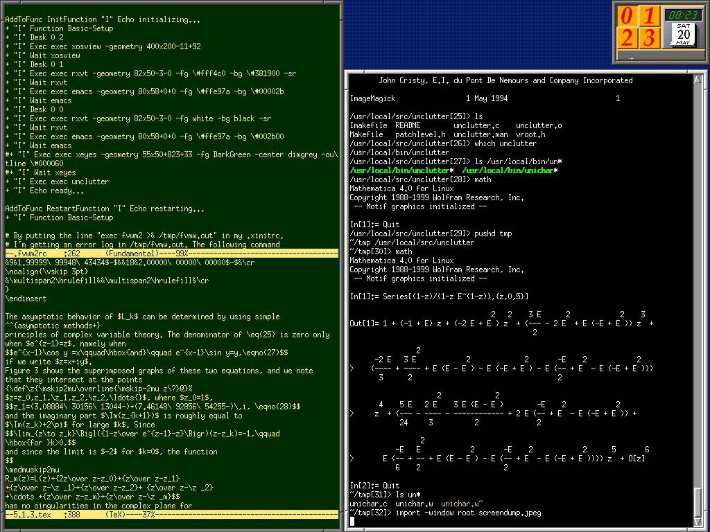

Donald Knuth
1 高德纳的一次访谈
Andrew：你在编著TAOCP时都用到哪些工具了？你使用TeX？LaTeX？CWEB？ Word？你在编程的时候使用哪些工具？
Donald：我通常的工作方式是用铅笔和纸先把所有东西都写下来，然后在旁边放 一个大废纸篓。然后我使用Emacs将所有文本键入到机器中，当时要使用TeX风格。 我使用TeX、dvips和gv查看结果，它们几乎可以瞬时显示出来。我使用 Mathematica检查数学运算的结果。
我使用CWEB编写每一个经过讨论的算法（这样我才能充分地理解它），CWEB和 GDB调试器简直是天作之合。我使用MetaPost制作插图（或者，在极少数的情况 下，会在Mac上使用 Adobe Photoshop或Illustrator）。我有一些自己创作的工 具，比如我自己的TeX拼写检查器和内置在Emacs的CWEB。我自己设计了在Emacs中 使用的位图字体。我还有一些特殊的Emacs模式（mode），可以帮助我对文件中的 好几万份论文和笔记进行分类； 特定的Emacs快捷键使得写书的过程有点儿像演 奏风琴 。我喜欢用rxvt作为终端输出的窗口。从去年12月开始，我使用了一个 名为backupfs的文件备份系统。我每天都需要对每一个文件进行归档，backupfs 非常适合我的需要。
根据我机器上当前的目录来看，今年我已经写了68个不同的CWEB程序。其他 的，2007年有100个左右，2006年90个，2007年100个，2004年90个。而且CWEB有 一个非常方便的“改变文件”机制，这样我可以快速地为一个主题创建多个版本和 修改了；在2008年，我目前为止已经在这68个主题上创建了73个修改。（有几个 修改非常短，仅有几个字节；其他则达到了5KB甚至更多。有些CWEB程序非常重 要，比如我完成于一月前的BDD包，它有55页。）因此，你可以看出文法式程序设 计对于我有多么重要。
我现在正在一台独立的Laptop上（没有网络连接）使用 Ubuntu Linux。我偶尔会 使用闪存驱动在Ubuntu Linux和Macs之间搬运数据。我用后者接入网络和处理图 像；但是我相信我的“传家宝”只有Linux而已。顺便提一句，相对于GNOME和KDE环 境，我更习惯把注意力留在键盘上，这样我可以能够使用经典的FVWM。不过似乎 有很多人更喜欢GNOME和KDE。每个人都有不同的爱好。
高德纳的 Fvwm 截图： 